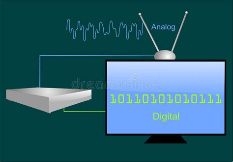
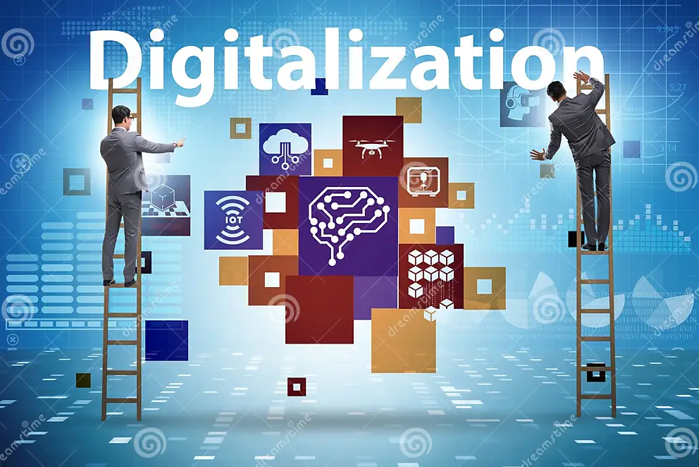
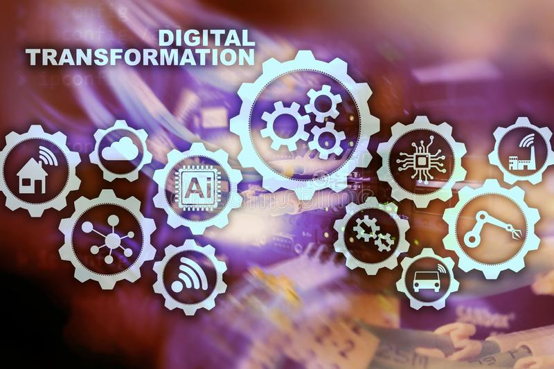

- Introduction
- La révolution digitale est parmi nous depuis déjà plus de deux décennies! C'est une réalité mondiale que vivent quotidiennement aussi bien les organisations que les personnes. Et pourtant, la confusion règne toujours en ce qui concerne les tenants et les aboutissants de la transition d’un environnement traditionnel vers un contexte digital.
Et depuis, trois termes sont utilisés de manière interchangeable pour désigner une transition digitale d'un business. Il s'agit de "Digitaliser", "Digitalisation" et "Transformation Digitale". En fait, ces trois termes ne signifient pas la même chose car, chacun d'eux a son propre sens. Et savoir faire la différence entre ces trois termes aide grandement à comprendre les tenants et les aboutissants d’une transition digitale. Regardons donc de plus près ce que chacun de ces termes signifie.
- I. Qu'entend t-on par le verbe Digitaliser?

- Digitaliser est une opération qui consiste à convertir au format digital ou binaire toutes les informations analogiques qui sont consignées dans des registres, des chronos, des classeurs, des images, des enregistrements audios, des microfilms, etc, pour les rendre utilisables par les ordinateurs et pouvoir ainsi, les exploiter plus facilement, comme par exemple les mettre sous forme de base de données, les partager, les sécuriser, les analyser, etc. Car, les écosystèmes digitaux ont besoin d'informations digitalisées pour pouvoir fonctionner. Donc digitaliser l'information c'est créer une fondation sur laquelle peut se bâtir tout projet de digitalisation de processus.
- II. Qu'est ce que la Digitalisation?

- La digitalisation est un processus qui consiste à utiliser des informations et données déjà digitalisées (numérisées) en s'appuyant sur des technologies digitales telles que les SMAC (Social, Mobile, Analytics, Cloud), les Iots (Internet of Things), l'Intelligence Artificielle (IA) et les outils de collaboration (CRM, ERP, Messagerie Instantanée, etc) pour rendre plus efficaces les méthodes de travail déjà en place, sans pour autant changer quoique ce soit dans la manière habituelle de réaliser du business. Ce processus est communément qualifié "d'Activation de la Digitalisation". La digitalisation de processus constitue une condition siné quanon pour la réalisation de tout projet de transformation digitale.
- III. Qu'est ce que la Transformation Digitale?

- La transformation digitale est un processus qui consiste à utiliser des données digitalisées (numérisées) et des technologies digitales pour créer de nouveaux processus métiers et/ou modifier ceux déjà existants à l'effet, d'améliorer la performance d'une activité. Mais pour que cette action prenne tout son sens en termes de transformation, elle doit aussi faire évoluer cette activité d'un environnement traditionnel marqué par une organisation hiérarchique et des méthodes commerciales planifiées (Waterfall methods), vers un écosystème digital articulé autour de quatre composantes fondamentales qui sont:
- 3.1. L' Acculturation Digitale
- La transformation digitale exige qu'une culture digitale soit ancrée dans les fondements mêmes d'une organisation. L'absence de cette dernière peut retarder ou même faire carrément faire échouer un projet de transformation digitale. En revanche, une culture digitale forte peut aider les organisations à accélérer le changement et à dépasser leurs concurrents sur le marché. Selon une étude récente du "Capgemini Digital Transformation Institute", 62 % des personnes interrogées dans 340 organisations ont cité les problèmes culturels comme étant le plus grand obstacle à la transformation digitale.
- 3.2. Le Modèle d'Affaires Digital
- Un Modèle d'Affaires définit la manière dont une organisation fonctionne pour créer de la valeur et tirer parti de son environnement. Il doit être adapté aux exigences d'un écosystème digital.
- 3.3. L' Expérience Digitale des Utilisateurs
- L'Expérience Utilisateur (en anglais User eXperience ou UX) en matière de digitalisation comprend l’ensemble des émotions ressenties par une personne et son impression quand elle est en interaction avec un produit, un système et/ou une interface. En fait, cette notion d'expérience utilisateur est devenue dans le marketing digital un corollaire incontournable sur lequel, se basent tous les designs de produits, de systèmes et/ou d'interfaces. De nos jours, elle doit être au centre de toute stratégie de transformation digitale de processus métiers.
- 3.4. L' Organisation Horizontale
- Une organisation horizontale est celle qui est en totale rupture avec l'organisation hiérarchique. En fait, il s’agit d’une organisation orientée projets, où une gestion horizontale est privilégiée et dont, le principe de fonctionnement est articulé autour de l'intelligence collective de l'équipe affectée au projet, un partage d'information et une fluidisation des processus de circulation de l'information au sein de cette dernière, sans passage obligé par des points de contrôle.
- Conclusion
- En résumé, il faut retenir que:
- Le verbe "Digitaliser" se concentre sur la conversion des informations analogiques en format binaire ou digital,
- Le mot "Digitalisation" implique l'intégration de technologies digitales dans les processus existants et,
- Le vocable "Transformation Digitale" consiste en une refonte globale des stratégies, des processus et de la culture d'une organisation pour tirer parti des technologies digitales à l'effet de disposer d’avantages stratégiques et d'innovation.
- Il est donc important de veiller à ce que les parties prenantes dans un projet de transition digitale comprennent clairement la signification de chacun de ces termes pour qu’elles puissent s’engager aisément dans un tel processus.